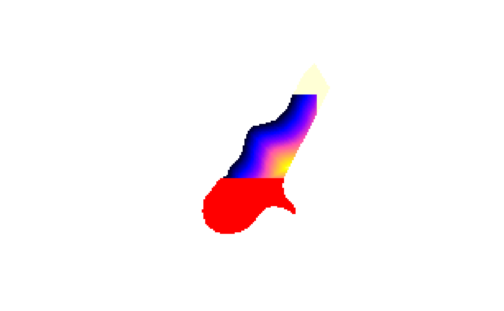

SpatialGridDataFrame-class.RdClass for spatial attributes that have spatial locations on a (full) regular grid.
Objects can be created by calls of the form as(x,
"SpatialGridDataFrame"), where x is of class
SpatialPixelsDataFrame-class, or by importing through rgdal.
Ordered full grids are stored instead or unordered non-NA cells;
grid:see GridTopology-class; grid parameters
bbox:Object of class "matrix"; bounding box
proj4string:Object of class "CRS"; projection
data:Object of class data.frame, containing attribute data
Class "SpatialGrid", directly.
Class "Spatial", by class "SpatialGrid".
signature(x = "SpatialGridDataFrame"): retrieves (and calculates!) coordinates
signature(x = "SpatialGridDataFrame"): selects rows, columns, and attributes; returns an
object of class SpatialGridDataFrame
signature(x = "SpatialGridDataFrame"): coerce to matrix; increasing col index corresponds to decreasing y coordinate, row index increases with coordinate index
signature(x = "SpatialGridDataFrame"): coerce to array; increasing array index for the second dimension corresponds to decreasing coordinates, all other coordinate dimensions increase with array index
signature(...): if arguments have identical topology, combine their
attribute values
The plot methods for “SpatialPixelsDataFrame” or “SpatialGridDataFrame” objects take the following arguments:
object of class SpatialPixelsDataFrame or SpatialGridDataFrame
arguments passed on to image.SpatialGridDataFrame
integer or character, indicating the attribute variable to be plotted; default 1
color ramp to be used; default bpy.colors(100) for continuous, or
RColorBrewer::brewer.pal(nlevels(x[[1]]), "Set2") for factor variables
for continuous attributes: values at which color breaks should take place
for continuous attributes:
numeric of length 2, specifying the range of attribute values to be plotted;
default to data range range(as.numeric(x[[attr]])[is.finite(x[[attr]])])
logical: draw x and y axes? default FALSE
character, default "i", see par
character, default equal to xaxs, see par
numeric or NULL, values at which axis tics and labels should be drawn; default NULL (use pretty)
color, to be used for drawing grid lines; default NA (don't draw grid lines)
integer, 1-4; default 4, see axis
logical: draw axis along scale? default TRUE
what to draw: "image", "scale", or "both"; default "both"
size for the scale bar; use lcm to specify in absolute size, or a numeric
value such as 1/6 to specify relative size; default lcm(2.8)
non-negative numeric indicating the amount to shrink the scale length, default 0
for categorical attributes: numeric between 0 and 1, indicating the scale width, default 0.3
for categorical attributes: integer, indicating how many scale categories should fill a complete width; default 15
SpatialGrid-class, which does not contain the attribute data,
and SpatialPixelsDataFrame-class which holds possibly incomplete
grids
Plotting gridded data with sp: https://r-spatial.org/r/2016/03/08/plotting-spatial-grids.html
data(meuse.grid) # only the non-missing valued cells
coordinates(meuse.grid) = c("x", "y") # promote to SpatialPointsDataFrame
gridded(meuse.grid) <- TRUE # promote to SpatialPixelsDataFrame
x = as(meuse.grid, "SpatialGridDataFrame") # creates the full grid
x[["idist"]] = 1 - x[["dist"]] # assigns new attribute
image(x["idist"]) # note the single [ for attribute selection
# toy example:
df = data.frame(z = c(1:6,NA,8,9),
xc = c(1,1,1,2,2,2,3,3,3),
yc = c(rep(c(0, 1.5, 3),3)))
coordinates(df) = ~xc+yc
gridded(df) = TRUE
df = as(df, "SpatialGridDataFrame") # to full grid
image(df["z"])
# draw labels to verify:
cc = coordinates(df)
z=df[["z"]]
zc=as.character(z)
zc[is.na(zc)]="NA"
text(cc[,1],cc[,2],zc)
# the following is weird, but illustrates the concept of row/col selection:
fullgrid(meuse.grid) = TRUE
image(meuse.grid)
image(meuse.grid[20:70, 10:70, "dist"], add = TRUE, col = bpy.colors())

# as.matrix, as.array
sgdim = c(3,4)
SG = SpatialGrid(GridTopology(rep(0,2), rep(10,2), sgdim))
SGDF = SpatialGridDataFrame(SG, data.frame(val = 1:12))
as.array(SGDF)
#> [,1] [,2] [,3] [,4]
#> [1,] 1 4 7 10
#> [2,] 2 5 8 11
#> [3,] 3 6 9 12
as.matrix(SGDF)
#> [,1] [,2] [,3] [,4]
#> [1,] 1 4 7 10
#> [2,] 2 5 8 11
#> [3,] 3 6 9 12
as(SGDF, "array")
#> [,1] [,2] [,3] [,4]
#> [1,] 1 4 7 10
#> [2,] 2 5 8 11
#> [3,] 3 6 9 12